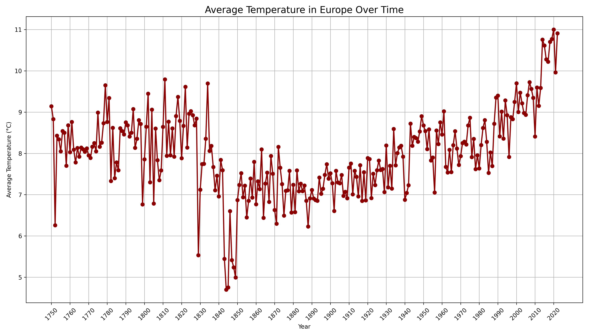
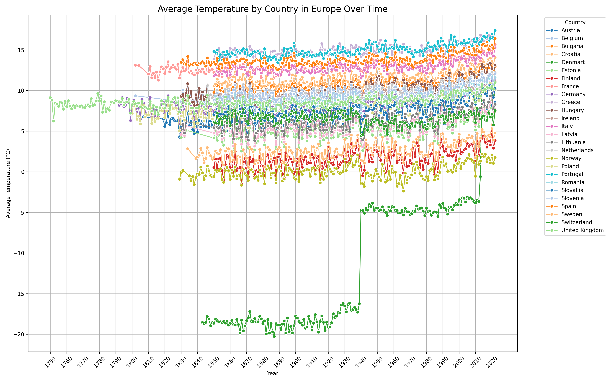
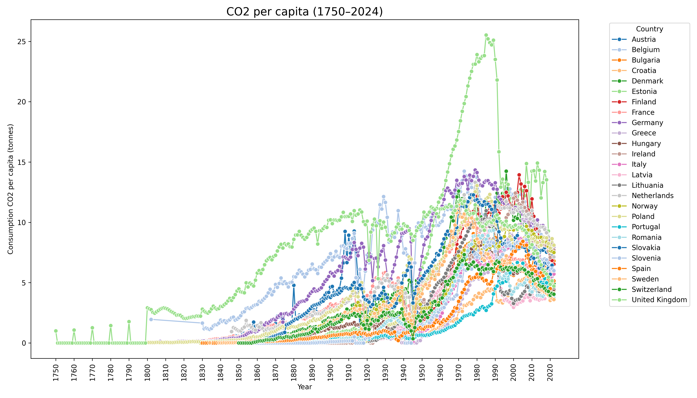

European Climate and Emissions Visualizations
Temperatures in Europe over time
 
1750–1900
Avg. temps
CO₂ per capita
2003–2022
Avg. temps
CO₂ per capita
CO2 per capita in Europe

CO₂ per Capita by Country (Flourish)
Normalized Indicators (Spain vs Europe)